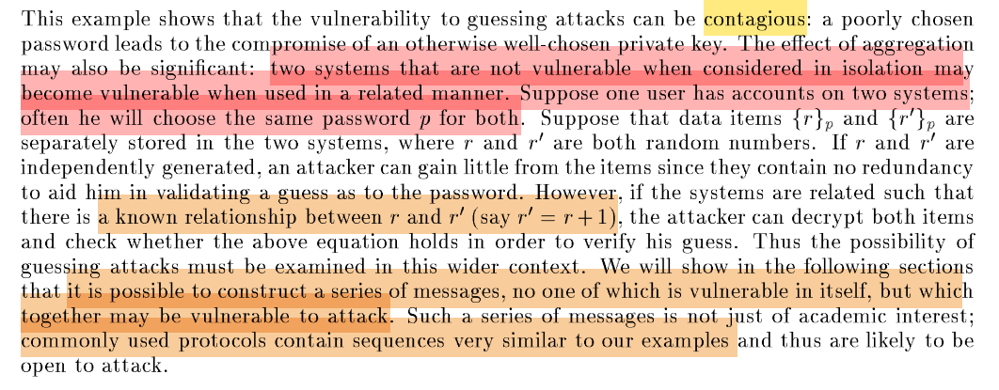
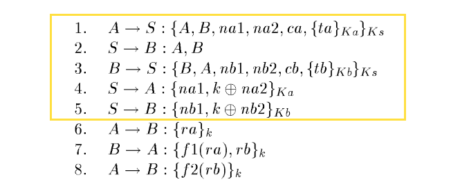
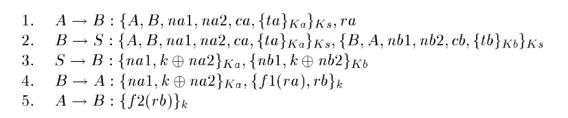
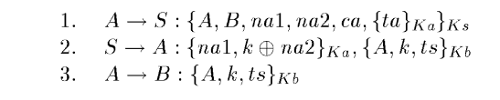
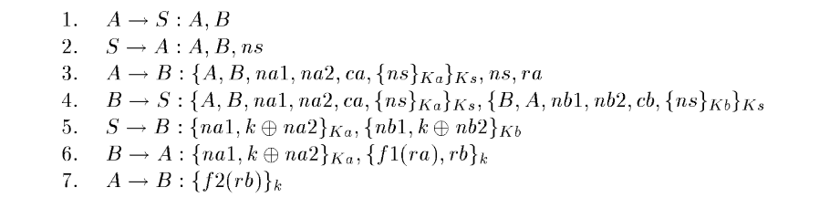
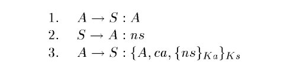
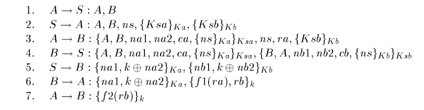
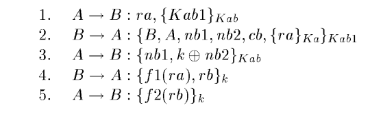
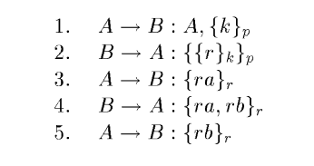

In a security system that allows people to choose their own passwords, people tend to choose passwords that can be easily guessed. This weakness exists in practically all widely used systems. Instead of forcing users to choose secrets that are likely to be difficult for them to remember, solutions that maintain user convenience and a high level of security at the same time are proposed. The basic idea is to ensure that data available to the attacker is sufficiently unpredictable to prevent an offline verification of whether a guess is successful or not. Common forms of guessing attacks are examined, examples of cryptographic protocols that are immune to such attacks are developed, and a systematic way to examine protocols to detect vulnerabilities to such attacks is suggested.
Guessing Attacks
The UNIX Password System
UNIX使用的是一个口令文件/etc/passwd。这个文件对于每一个用户的口令$p$进行$hash$，每个口令进行$hash$时都有一个盐值$s$，盐值$s$和$hash$值$g(p, s)$都被存在口令文件中
攻击者可以猜测$p$的值然后进行$hash$，对于$hash$值进行验证来判断$p$的猜测是否正确
一种解决办法是限制/etc/passwd文件的访问权限
SunOS Secure NFS
去掉了/etc/passwd，转而使用公钥系统去加强安全性。SunOS-4.0引入了文件/etc/publickey，其中包括用户网络名称、用户的公钥和对应的私钥（私钥是用DES加密过的，DES的密钥由用户的口令派生）。用户登录时即可通过口令解密私钥，然后服务器验证私钥与公钥是否匹配即可验证口令的正确性。
因为/etc/publickey是公开的，攻击者依旧可以猜测口令$p$，然后解密私钥。再随意选取一段文本，利用已知的公钥和猜测出的私钥进行加密解密，观察结果是否一致即可验证$p$猜测的正确性。
一种解决方法是限制/etc/publickey的访问权限
启示：对猜测攻击的脆弱性是具有传染性的

The Kerberos Authentication System
服务器最开始给用户返回的响应中包括一些可识别的信息比如说时间戳$t$和服务器$S$，而且这个响应是由用户的口令加密得到的。
所以攻击者可以对于截获的消息进行猜测攻击，解密后的数据可以通过对比，很明显地发现$t$是否是一个合理的时间或者$S$是否为合理的服务器名字符串，即可判断解密是否正确。
Known Plaintext and Verifiable Text
攻击者发动猜测攻击时，往往需要一些验证性的信息来判断其猜测是否正确。已知明文攻击主要就是利用具有验证性的文本对其猜测攻击进行验证。
已知明文攻击对于对称密码系统来说，可以通过猜测密钥对已知的密文进行解密，然后判断其对应的明文是否一致，从而进行攻击
对于非对称密码系统来说，猜测私钥是不现实的，所以可以猜测明文文本信息，然后利用公钥进行加密，来比对对应的密文是否一致，从而验证猜测是否正确
Protection Techniques
simple two-message handshake transaction
n是随机数，所以${\{n\}}_k$、${\{f(n)\}}_k$各自安全，但是如果被放在一起，则可以用f$()$验证，反而不安全
Use two different keys
必须$k1$和$k2$都猜对才能攻击成功，可能需要多次验证，大大增加难度
如果$k1$已知（比如$k1$是公钥）、${\{n\}_{k1}}$已知，那么$k2$可能被比对出来结果。用$k2$解密得到$n’$，用${\{n’\}_{k1}}$与${\{n\}_{k1}}$比对。这种比对主要依赖f$()$，如果只是$f(n)=n+1$这种可逆的简单运算，攻击便可成功
confounder(a sufficiently large random number)
引入大随机数作为公钥加密的干扰因子，从而避免公钥加密密文成为验证文本
随机数$c$的加入可以形成一次一密，但是$n$或$f(n)$可能并非严格的随机数，包含$recognizable$ $data$比如时间戳，会被用来验证
mask
引入掩码从而掩盖住具有含义的信息，从而解决验证文本的问题
Authentication Protocols
A Mutual Authentication Protocol
其中$K_a$和$K_b$是A、B与S的共享密钥，$k$是A、B之间的会话密钥，$K_s$是server的公钥，$t_a$和$t_b$代表两个时间戳

- $Message1、3$：这两条消息对称，以$Message1$为例，包括三个随机数$na1$，$na2$，$ca$；一个只能由A产生的新鲜性消息$\{t_a\}_{K_a}$，声明A要与B进行通信
$Message4、5$：这两条消息对称，以$Message1$为例，$na1$代表对第一条消息的正确破解，$na1$和$na2$在多次通信中不能重用；$na2$用于隐藏$k$，防止外来攻击者（外部攻击）或者B（内部攻击）图谋不轨（没有$na2$，B可以用$k$验证对于$K_a$的猜测）。$ca$作为随机数干扰因子，也用于防止B的恶意（如果没有$ca$，一旦B截获了第四条消息，B可以去猜测$K_a$，然后B可以得到$na1$、$na2$、$k$，再加上公开的A、B、$K_s$，B可以恢复第一条消息验证是否相同，进而确认猜测是否正确）
$Message 6-8$：挑战应答机制
Reducing the Number of Messages

Enhanced Kerberos Protocol

由于B是服务器，因此它与服务器S共享的密钥$K_b$也可以被认为是经过精心选择的，不会造成猜测攻击
Using Nonces
在某些系统中，我们可能不希望假设同步时钟的可用性。相反，我们可以使用众所周知的挑战-响应技术来确定信息的及时性

Identification
像ATM卡、信用卡、通行卡、电子通行、电话卡等。这种情况下通信不需要会话密钥，也不需要双向认证，只需要简单的身份认证即可

Using Secret Public Keys
无需记录公钥，由server发送
公钥要保密好，不然随意泄露出去会成为验证文本

Direct Authentication
A、B已经共享密钥$K_{ab}$，直接进行身份认证即可。$K_{ab1}$是公钥。

Detecting Vulnerability
搜索可验证文本可以看作是图论中的寻径问题
一条找到的路径对应着一种可能的攻击方式，最短路径给出了成功攻击所需的最小努力的度量
Compared with EKE using public keys

由于我们使用了混淆和随机数，因此会话密钥$k$和初始选择不佳的密钥$p$是安全隔离的，这样泄露会话密钥的影响严格限于该会话的消息
然而，EKE协议中，泄露会话密钥$r$将使攻击者能够在未来的所有会话中重播$Message 2$并伪装成B。此外，它还允许猜测攻击，攻击者可以猜测$p$，解密$Message 1$获得k，并使用$p$、$k$、$r$重构$Message 2$以进行验证
Advantages & disadvantages
优点
- 提出防范由于$Verifiable$ $Text$造成猜测攻击的方法：使用混淆和随机数
- 提出考虑到实际因素、适用于不同场景的认证协议及其变体
- 概述一种系统方法来检查协议对猜测攻击的脆弱性
缺点/不足
- 和EKE协议一样，都容易受到数论攻击
使一个协议对猜测攻击鲁棒需要增加多少成本，尚不清楚
目前还不清楚公钥加密技术的使用有多重要；如果用户不必保留巨大的常量（即使它们是公开的），那就太好了。
缺乏协议的安全性证明